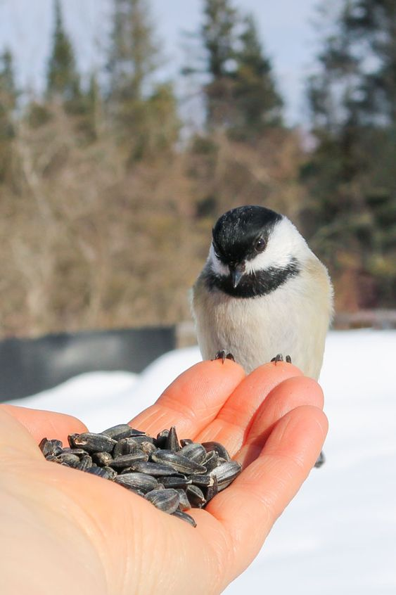
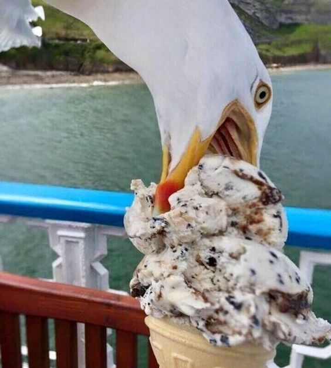

можно

- 🌾 твердые зерна пшеницы, кукурузы, овса, проса, сырые семена подсолнечника и тыквы
- 🥩 несоленое сало
- 🍒 ягоды рябины, шиповника
- 🍎 яблоки, груши и сливы без косточек, бананы
- 🌻 семена из шишек и с деревьев, лесные орехи, желуди
- 🐦 специальные корма для птиц
нельзя

Здесь то же самое, что с собаками и кошками: нельзя скармливать птицам объедки со стола, черствый хлеб или "баловать" шоколадками. Это не даст птицам энергии и витаминов, нужных для выживания, поддержания здоровья и продолжения рода, еще и отравить может. Вот список продуктов, которые обычно подкидывают пернатым и которые им обычно нельзя:
- 🍞 хлеб свежий и черствый
- 🍪 печенье, крекеры, хлебцы и другие человеческие перекусы
- 🌶️ жареное, соленое, копченое, пряное, кислое, острое
- 🍫 шоколад